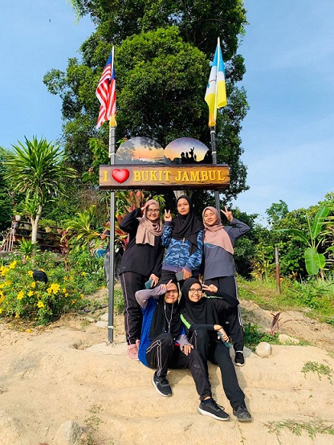
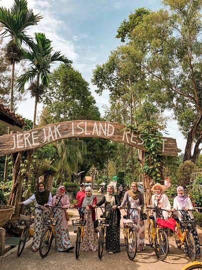

{kind=link}
{kind=link}


| HOME | BIODATA | EDUCATION | EXPERIENCE | FAMILY | FAVOURITE | GALLERY |
|---|
|
Going up and down hills gets the heart pumping, creating a great cardio workout. Like most cardio exercises, hiking helps reduce your risk of heart disease, stroke, high blood pressure, high cholesterol and even some cancers. Hiking is a weight-bearing exercise, which builds muscle mass and helps prevent osteoporosis. So, this is the reason why i love to hiking and futhermore this can help me to maintain my health because I am the person who dont like to do daily excercise. Moreover, when hiking i can build Moreover while hiking, I can build resilience and cultivate the spirit to succeed in myself. This is because when we climb a hill it tests our nature whether to keep trying to reach the top or stop in the middle of the road. Other than that, I was able to meet various types of groups and human temperaments while at the top. There are many races that help each other, some are tired, have fun, take pictures, are silent and some even cry because they are tired. It is so fun and give me a lot of knowledge of society while gain a healthy body.What I like most is that when I do this activity I can see the beauty of God's creation from various angles and make me feel grateful to be born in this beautiful world. At the top of the hill we will feel infinite pleasure and gain peace. Among the latest places I visited, to do this activity is at Bukit Jambul Hiking Trail, Penang. There is no garden. Only hiking trail to reach the hill top. It has Good city & sea view. It's only take about 30-45 minutes to hike to the hill top. The climbing route is quite steep and challenging and sometimes in the late morning many people comewhich make difficulty for hiking because the road is also quite narrow. So to visit there is better in the early morning. The preparation that needs to be done before climbing is that we must eat first, do not leave the stomach empty. This is because it causes us dizziness and it is also recommended to bring medicines such as oil or candy for any emergency. My Next Target:
Link Place that I had go: |
Among the things that I get and I love when I holiday with my friends is: Create special memories that last forever:Experiences certainly bring us closer together and help us to learn more about one another. You’ll look back on those special moments fondly throughout the years. There are more people to capture special moments: Rotate the camera so that everyone has a chance to capture something they think is special from the holiday. There’s also extra hands to capture those shots like you with your partner, or family, that sometimes get missed when you don’t have an extra pair of hands to take the shot. Do things you wouldn’t normally do: Often those in your travelling group have different interests and will be keen to experience tours and do things that you wouldn’t have normally considered. Embrace it! You’ll learn new things and often find something that you enjoy unexpectedly. Share good food and drink: When experiencing new types of food and drink on holiday the more people you have, the more you get to order and share. Why enjoy just one dessert when you could share four or more! It can be cost-effective: Sharing expenses like accommodation, car hire, food & drink can mean the holiday costs less then it would travelling as a single traveller or a couple. Recommendation: |